Testbericht 2 – UI Phase A
1 Umfang
Geprüft wird die Browser-Oberfläche nach Phase A: links der Editor, rechts die 3D-Ansicht mit Pfadleiste, unten die Statuszeile. Die Engine (Rust, Wasm, SMLib-Kernel) läuft in einem Web Worker; die UI wertet nur die Szenenbeschreibung aus und lädt Meshes pro Knoten nach.
- Editor: Lezer-Grammatik (OpenSCAD mit
grid,anchor,k:), Diagnosen (rot unterstrichen, Zeile rot bzw. gelb, Meldung am Zeilenende), Inline-Hinweise (Werte, „4 Kanten“),*-Zeilen ausgegraut, Positionen alter Szenen überChangeSet.mapPos. - 3D-Ansicht: Meshes pro Knoten mit Cache nach
mesh_key, Platzierung überdisplay_world, Kanten als Linien, Drehen/Verschieben/Zoomen, „Alles zeigen“, Standardansichten, Achsenkreuz, Boden. - Code → Ansicht: Cursor (Knoten voll, Rest gedimmt), Hover über Zeile, difference/intersection/fillet/chamfer/shell, Modifier
#%!*, Transformationen mit Koordinatenkreuzen vorher/nachher und Umriss an der Ausgangsposition, 2D-Formen als Umriss mit leichter Füllung. - Ansicht → Code: Hover über Fläche markiert die Zeile, Klick setzt den Cursor, Doppelklick auf eine Modulinstanz springt in die Definition.
- Modulkontext:
SetContextbeim Cursor in einer Moduldefinition, Pfadleiste mit Sprung eine Ebene hoch. - Raster und Anker (lesend): Ebenen am Rand der Hülle, Schnittpunkte, Literal durchgezogen / Ausdruck gestrichelt, Schalter „alle Raster“, Hover über Rasterausdruck, Anker als Rauten mit Pfeil.
- Dateien und Fehler: Autospeichern in IndexedDB, Öffnen/Speichern, Beispielmenü, Export STL/3MF, Syntaxfehler und Watchdog.
2 Testumgebung
| Betriebssystem | Linux 6.18.44-fc-v140 (x64) |
|---|---|
| CPU | Intel(R) Xeon(R) Processor @ 2.80GHz · 4 Kerne |
| Node.js | v22.22.0 |
| Browser | Chromium 141.0.7390.37 (headless, Playwright 1.56.1) |
| Grafik | WebGL über SwiftShader (Software-Rendering, keine GPU) |
| Fenster | 1440 × 900 px, Gerätepixelverhältnis 1 |
| Build | Vite 8.3.5 Produktions-Build, Vorschau-Server (vite preview) |
| Bibliotheken | React 19.3.1, three.js 0.186.1, CodeMirror 6.43.15, Zustand 5.0.16, Vitest 5.0.5 |
| Engine | cad_wasm_bg.wasm 1.16 MiB, smlib.wasm 4.85 MiB (je einmal im Build) |
| Quelltext | Branch worktree-agent-a5a96375179179a1c, Commit b834607 |
Die End-to-End-Tests laufen gegen den Produktions-Build. Gewartet wird auf Szenen-Versionen und den Darstellungszustand über den Testhaken window.__cad, nicht auf feste Zeiten. Hover und Klick in der Ansicht sind echte Mausereignisse auf dem Canvas; der Haken liefert nur einen Bildpunkt, unter dem eine Fläche der gesuchten Zeile liegt.
3 Szenarien (Playwright)
| ID | Szenario | Ergebnis | Dauer | Prüfung |
|---|---|---|---|---|
| S01 | Laden: Editor, Ansicht und erste Szene | bestanden | 1.8 s | Startzustand: Spec-Beispiel gehaeuse.scad links im Editor, rechts die Szene mit Boden, Achsenkreuz und den Ankern der benannten Instanz k (Rauten, mit Pfeil bei dir). |
| S02 | Beispiel öffnen | bestanden | 2.5 s | Beispielmenü → spec/lochplatte.scad: der Editor lädt die Datei, die Ansicht zeigt nach der Auswertung die Platte mit Bohrungen, Lasche und den Anker p.erstes_loch. |
| S03 | Cursor in Zeile: Knoten voll, Rest gedimmt, Transformation mit Koordinatenkreuzen | bestanden | 2.3 s | Cursor auf translate(k.ecke) in Zeile 22: Teilbaum am Ziel voll, an der Ausgangsposition als Umriss; Koordinatenkreuz vorher gestrichelt, nachher durchgezogen, Pfeil vom alten zum neuen Ursprung; Rest des Modells gedimmt. |
| S04 | Pixelprüfung: Dimmen verändert die Darstellung | bestanden | 2.9 s | Mittlere Helligkeit der Ansicht ohne Auswahl 226.3, mit Cursor auf Zeile 22 234.3 (gedimmter Rest ist heller). |
| S05 | Modulkontext, Differenz: abgezogener Körper rot | bestanden | 3.0 s | Cursor in Zeile 10 (difference) innerhalb von module gehaeuse: Kontext wechselt auf das Modul (Pfadleiste „Datei › gehaeuse“, eigenes System, Raster g eingeblendet); Ergebnis voll, abgezogene Box aus Zeile 12 rot halbtransparent. |
| S06 | Hover über Zeile: Knoten halbtransparent | bestanden | 2.8 s | Maus über Zeile 12 (innere Box, wird abgezogen): der Körper erscheint halbtransparent im Gesamtmodell, sichtbar durch das Ergebnis hindurch; Cursor steht auf Zeile 11 (äußere Box voll). |
| S07 | Hover über Fläche markiert Zeile, Klick setzt Cursor, Doppelklick springt in Definition | bestanden | 3.4 s | Maus über der Fläche des Deckels an k.ecke: Zeile 22 im Editor wird hervorgehoben (Fläche → tri_tags → tag_nodes → Knoten → Zeile). Klick setzt den Cursor in Zeile 22, Doppelklick auf das Gehäuse springt in module gehaeuse. |
| S08 | Pfadleiste: Klick springt eine Ebene hoch | bestanden | 2.7 s | Modulkontext gehaeuse: nur das Modul in seinem eigenen System mit Raster g (Schnittpunkte, verwendete Ebenen der Zeile). Klick auf „Datei“ setzt den Cursor auf den Aufruf k: gehaeuse(w = 60) (Zeile 21) und zeigt wieder die ganze Datei. |
| S09 | Modifier #, %, *, ! | bestanden | 2.7 s | 24_modifiers.scad: # dauerhaft rot halbtransparent (auch als abgezogener Körper), % grau halbtransparent als Hilfsgeometrie, * unsichtbar und Zeile 7 ausgegraut. Bei 25_root_modifier.scad meldet die Statuszeile den aktiven !-Teilbaum. |
| S10 | Syntaxfehler: letzter gültiger Stand bleibt sichtbar | bestanden | 2.4 s | Eingabe „ ]“ am Ende von Zeile 22: Stelle rot unterstrichen, Meldung am Zeilenende, Statuszeile „1 Fehler“; die Ansicht zeigt weiter den letzten gültigen Stand. Nach dem Löschen wird neu ausgewertet. |
| S11 | Gescheiterte Operation: Zeile rot, Meldung am Zeilenende | bestanden | 2.5 s | difference(fillet = 20) an einem 10-mm-Würfel: Verrundung gescheitert, Zeile 1 rot mit Meldung am Zeilenende; die Ansicht zeigt den Körper ohne Verrundung. |
| S12 | Export STL und 3MF | bestanden | 1.6 s | Export STL: gehaeuse.stl, 54 Dreiecke, 2784 Byte (binär, 84 + 50·n). Export 3MF: gehaeuse.3mf (ZIP, 4486 Byte). Die Statuszeile meldet den Export. |
| S13 | Raster: verwendete Ebenen, alle Raster, Hover über Rasterausdruck | bestanden | 3.4 s | Modul lochplatte, Schalter „alle Raster“: Ebenen als dünne Linien am Rand der Bauteilhülle (Literal durchgezogen, Ausdruck gestrichelt), Schnittpunkte als Punkte. Ohne Schalter nur die 6 Ebenen der Zeile 12; Hover über g[loch[i], mitte, boden] hebt den Punkt hervor. |
| S14 | Anker benannter Instanzen | bestanden | 2.6 s | winkel_anker.scad: Anker der benannten Instanzen a und b als Rauten, mit Pfeil bei dir. Hover über a.boden_loch hebt diesen Anker hervor; Cursor auf a: winkel() hebt die drei Anker der Instanz hervor. |
| S15 | Fillet-Zonen blau, ausgewählte Kanten farbig, Inline-Hinweis | bestanden | 2.8 s | fillet_zonen.scad, Cursor auf fillet(2) in Zeile 12: Zonen (Rasterlinie und Kugel) blau halbtransparent, ausgewählte Kanten orange; Inline-Hinweis „2 Zonen · 2 Kanten“ am Zeilenende. |
| S16 | Positionen alter Szenen werden beim Tippen weitergeführt | bestanden | 2.7 s | Zwei Zeilen oben eingefügt, während die Engine 1,5 s blockiert ist: Der Cursor in Zeile 24 wählt noch in der alten Szene den Knoten translate(k.ecke) (früher Zeile 22) – Quellpositionen werden über ChangeSet.mapPos weitergeführt, bis die neue Szene da ist. |
| S17 | Watchdog meldet hängende Engine | bestanden | 3.0 s | Engine-Worker 5 s blockiert (Testhilfe, Watchdog 0,8 s): Der Worker wird beendet und neu gestartet, die Statuszeile meldet den Fehler rot; die letzte Szene bleibt sichtbar, die nächste Änderung wird normal ausgewertet. |
| S18 | Autospeichern in IndexedDB | bestanden | 4.6 s | Änderung wird nach 0,4 s in IndexedDB gespeichert; nach dem Neuladen der Seite steht der geänderte Text wieder im Editor. |
| S19 | Dunkles Thema und Standardansichten | bestanden | 2.8 s | Dunkles Thema, Iso-Ansicht, Cursor auf k: gehaeuse(w = 60): Instanz voll, Anker der Instanz hervorgehoben, Rest gedimmt. |
| S20 | intersection und 2D-Formen | bestanden | 5.1 s | 05_nested_booleans.scad, Cursor auf intersection(): Würfel und Kugel halbtransparent, Ergebnis voll. 27_spacers_2d.scad, Cursor auf square([30, 10]): 2D-Form als Umriss mit leichter Füllung in ihrer Ebene (Ansicht von oben). |
| S21 | Öffnen und Speichern ohne File System Access API (Hoch- und Herunterladen) | bestanden | 1.5 s | Ohne File System Access API: „Öffnen…“ lädt eine Datei über den Dateidialog hoch (teil.scad wird ausgewertet), „Speichern“ lädt den Quelltext unverändert herunter. Mit der API (Chromium) werden dieselben Funktionen über showOpenFilePicker/showSaveFilePicker ausgeführt. |
| S22 | Messwerte: Tastendruck bis neue Szene, fps beim Drehen | bestanden | 13.7 s | Fünf Änderungen des Literals in Zeile 21: Tastendruck → neue Szene gezeichnet, Median 177 ms (App-Messung). Drehen über 120 Bilder: 13 fps (SwiftShader, ohne GPU). |
4 Unit-Tests (Vitest)
| Datei | bestanden | Fehlgeschlagen |
|---|---|---|
| web/src/editor/decorations.test.ts | 6 / 6 | – |
| web/src/editor/lang.test.ts | 42 / 42 | – |
| web/src/logic/context.test.ts | 5 / 5 | – |
| web/src/logic/display.test.ts | 15 / 15 | – |
| web/src/logic/grids.test.ts | 5 / 5 | – |
| web/src/logic/positions.test.ts | 5 / 5 | – |
| web/src/logic/sceneIndex.test.ts | 9 / 9 | – |
Logik ohne Browser: Lezer-Grammatik auf allen Beispielen, Zuordnung Code ↔ Knoten (Cursor, Fläche → Zeile, Mehrdeutigkeit, Modulkontext), Darstellungszustände, Rasteranzeige, Pfadleiste und Definitionssprung, Editor-Dekorationen, Abbildung alter Positionen. Szenen als Fixtures aus der echten Engine (web/scripts/dump-scene.mjs).
5 Messwerte
| Größe | Wert | Messung |
|---|---|---|
| Ladezeit bis zur ersten Szene | 905 ms | Navigation bis zum ersten Zeichnen der vollständigen Szene von gehaeuse.scad (Wasm laden, Auswertung, Tessellierung, Rendern) |
| Erste Auswertung | 112 ms | SetSource bis vollständige Szene (kalter Cache) |
| Tastendruck → neue Szene (Median) | 177 ms | App-Messung: letzte Änderung bis zum Zeichnen der neuen Szene; Einzelwerte 77, 177, 188, 291, 143, 64 ms |
| Tastendruck → neue Szene, Testsicht (Median) | 397 ms | Playwright: Tastendruck bis die Szene im Testhaken sichtbar ist (inkl. Abfrageintervall 50 ms) |
| Auswertung (Median) | 24 ms | SetSource bis vollständige Szene während der Änderungen (warmer Cache) |
| Bildrate beim Drehen | 13 fps | 120 Bilder Kameradrehung um die z-Achse, je Bild ein vollständiges Rendern (SwiftShader) |
| Größte Bilddatei im Bericht | 140 KiB | JPEG, Qualität 82 |
Software-Rendering ohne GPU; auf einem Desktop mit GPU sind Bildraten deutlich höher. Die Zeiten enthalten die Auswertung im Worker (Sprache + Kernel) und das Nachladen der Meshes.
6 Bekannte Grenzen und Abweichungen
- Griffe, Ziehen, Snappen und die Parameterleiste sind nicht Teil von Phase A; Raster und Anker werden nur angezeigt.
- Hover über Kanten wird über die angrenzende Fläche aufgelöst (Kanten tragen keine Knoten-Tags). Union-Kinder erhalten beim Hover einen dünnen Umriss, beim Cursor nicht.
- Beim Wechsel des Modulkontexts sendet die UI den Quelltext mit neuer Version erneut, damit jede Szenen-Version genau eine Auswertung bezeichnet (Meshes werden pro Version angefordert). Das kostet eine zusätzliche Sprachauswertung von wenigen Millisekunden.
- Bei Mehrdeutigkeit (gleicher Inhalt an mehreren Stellen, z. B. zwei Deckel) wird über die Lage des Trefferpunkts in den Knotenhüllen getrennt; bleibt sie bestehen, werden alle Zeilen markiert.
- Der Watchdog-Test blockiert den Worker über eine Testnachricht; ein echter hängender Kernel-Aufruf wurde nicht nachgestellt.
- Die Messwerte stammen aus einem headless Chromium mit SwiftShader und sind nur relativ aussagekräftig.
7 Screenshots
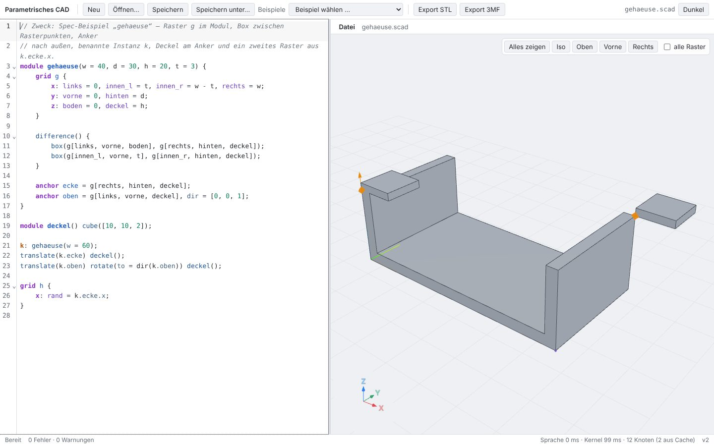
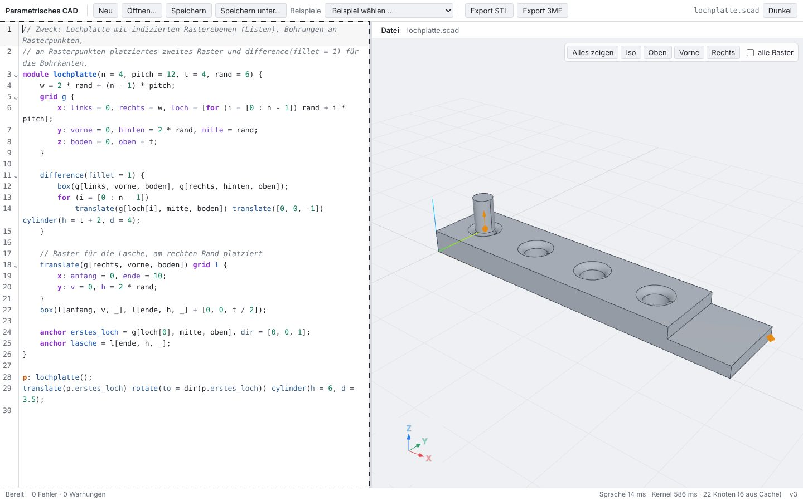
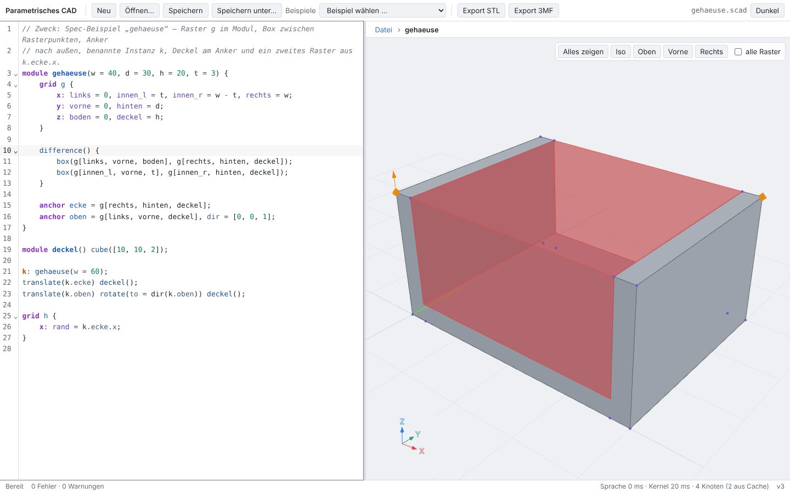
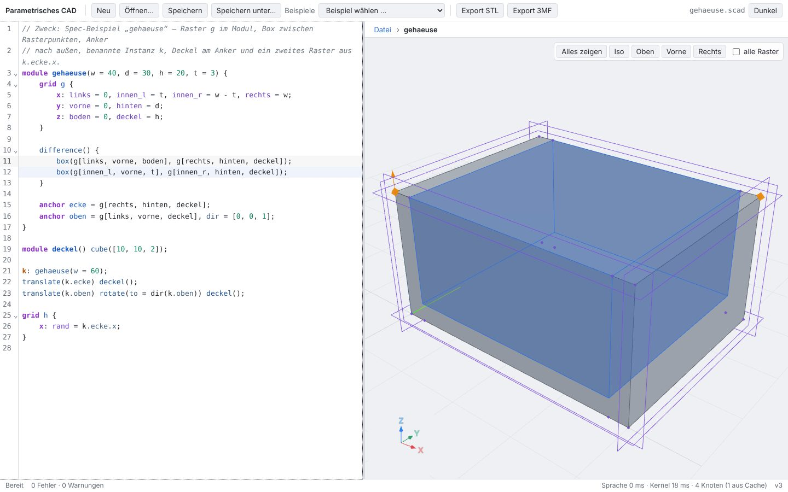
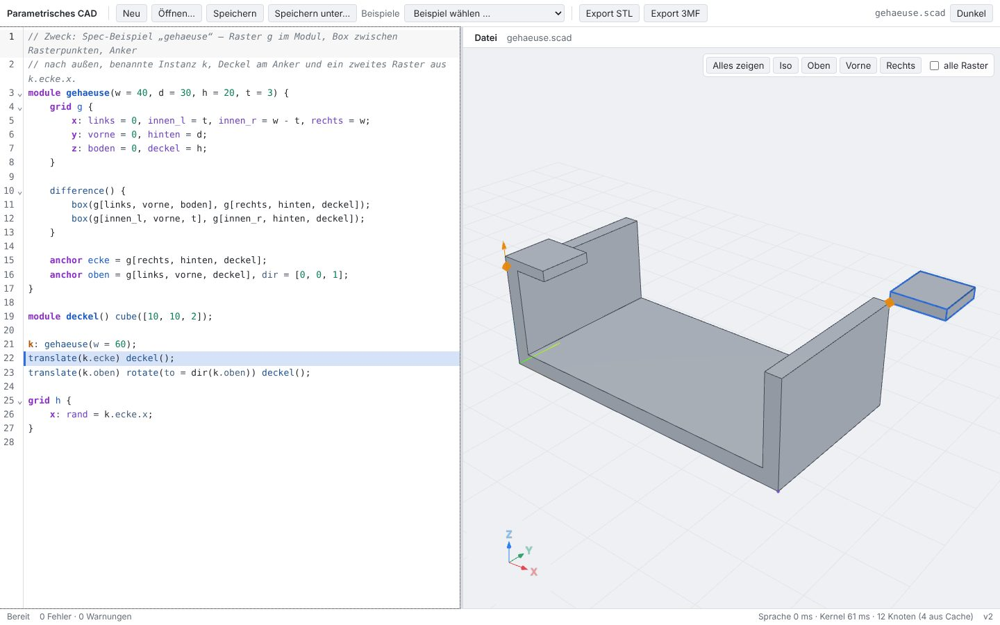
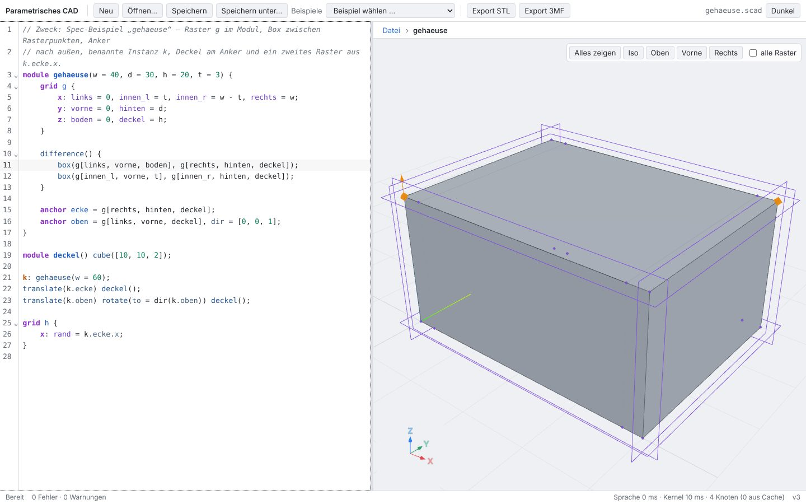
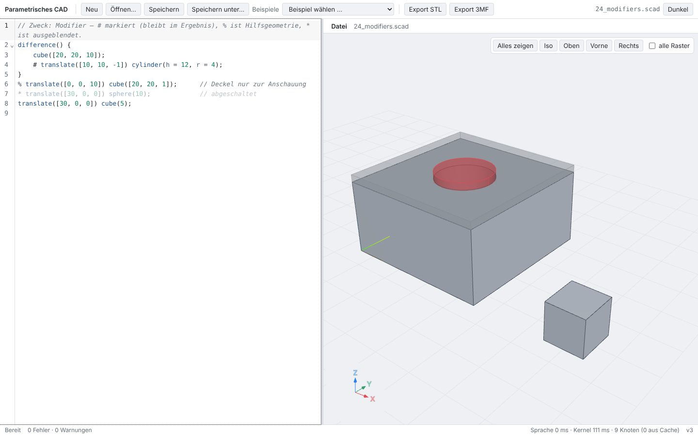
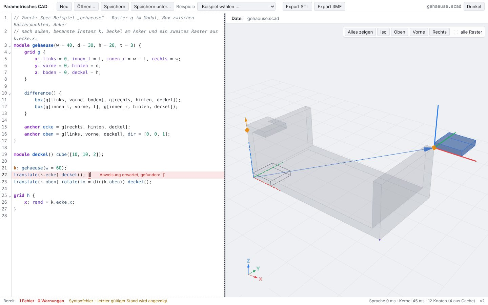
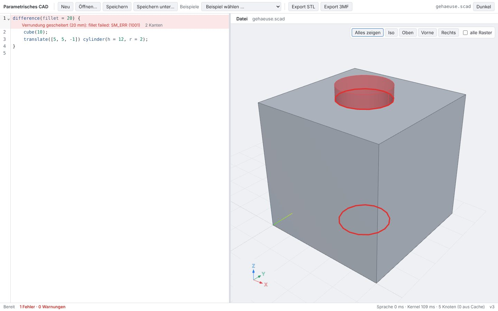
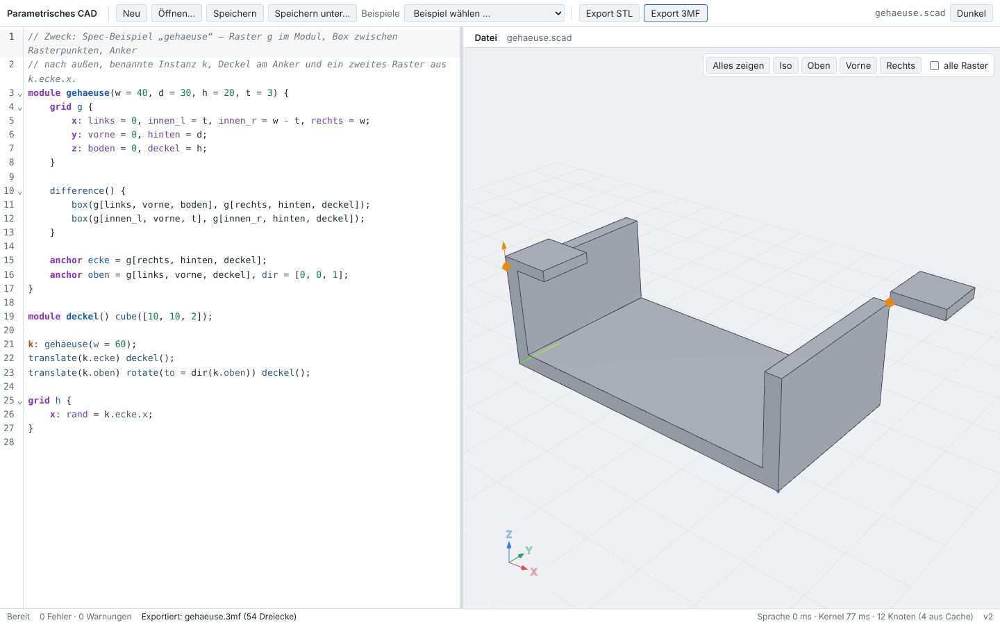
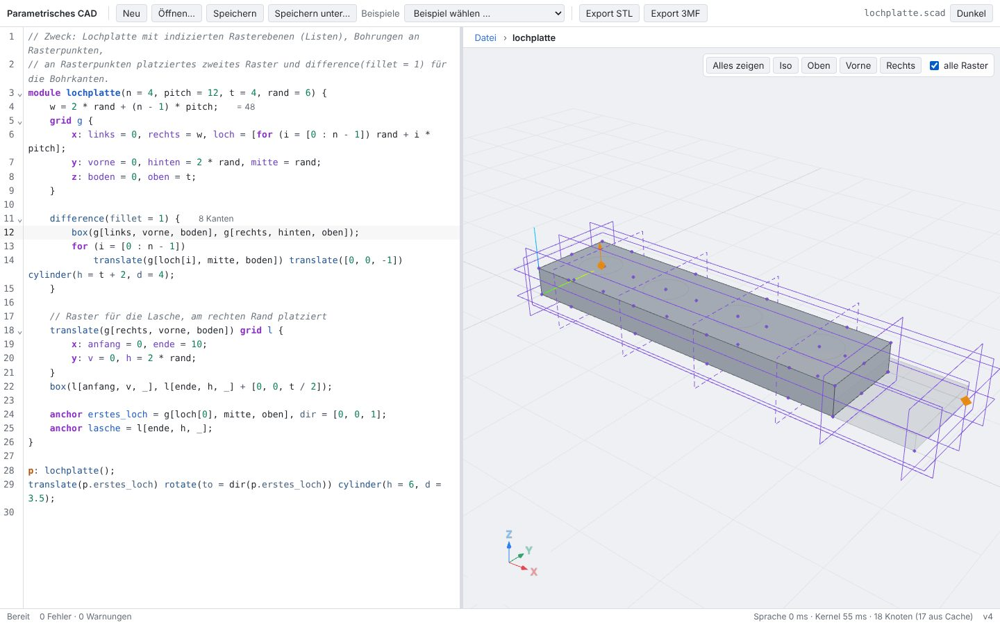
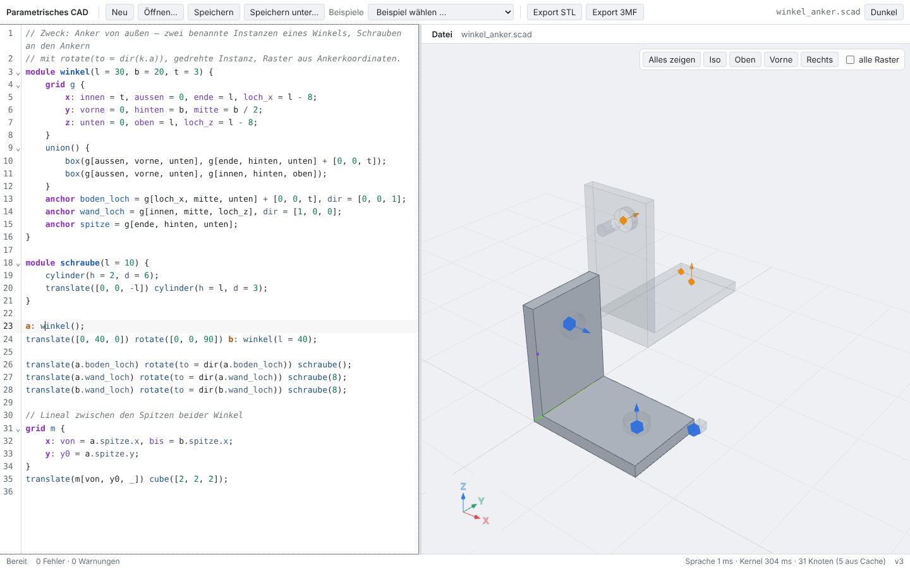
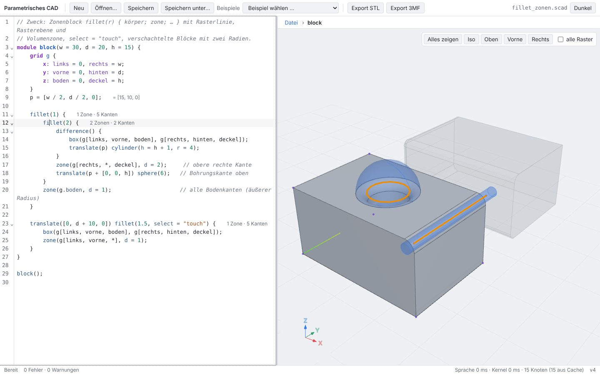
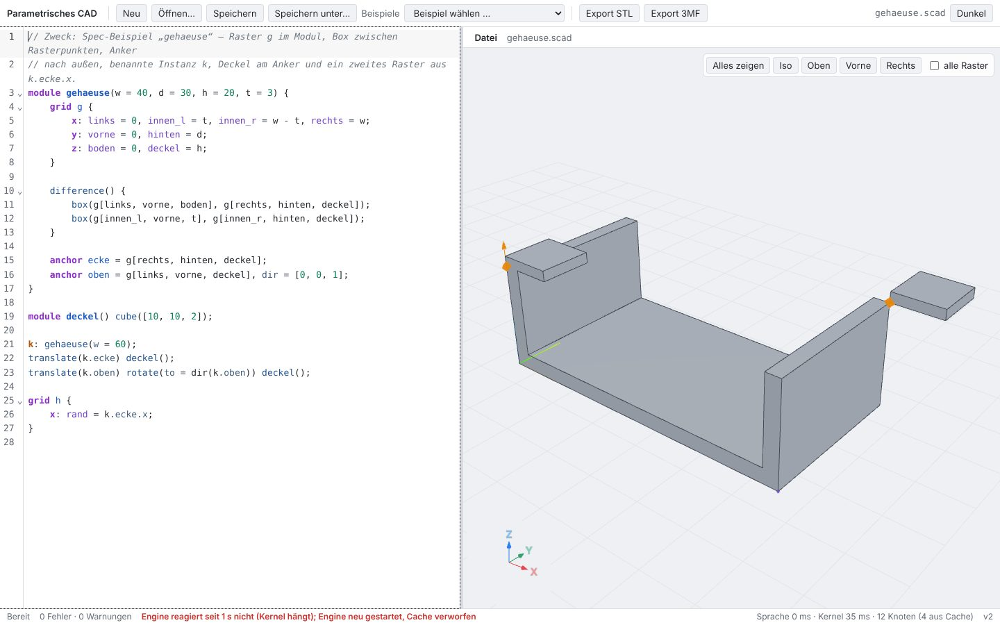
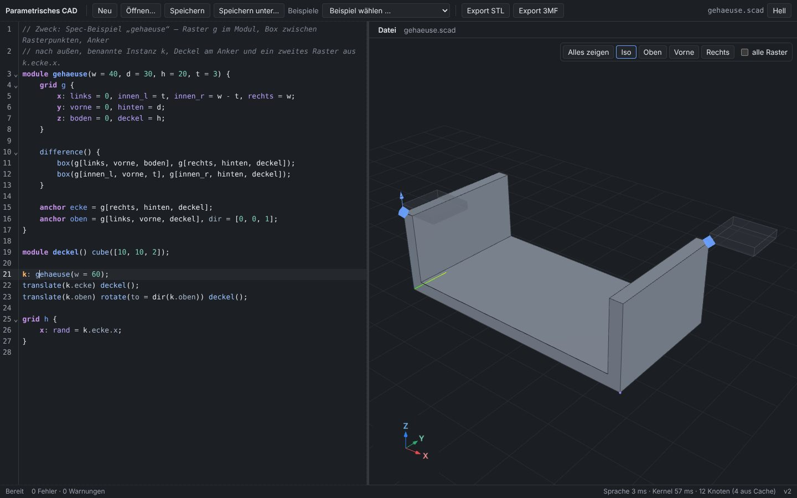
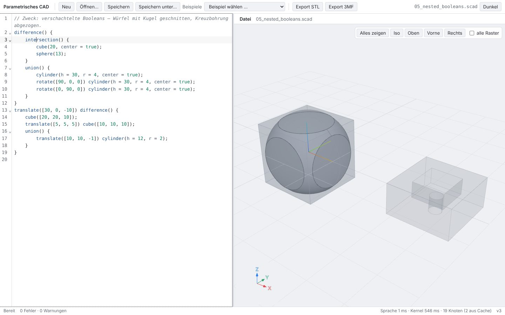